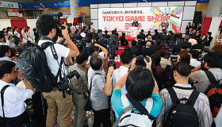
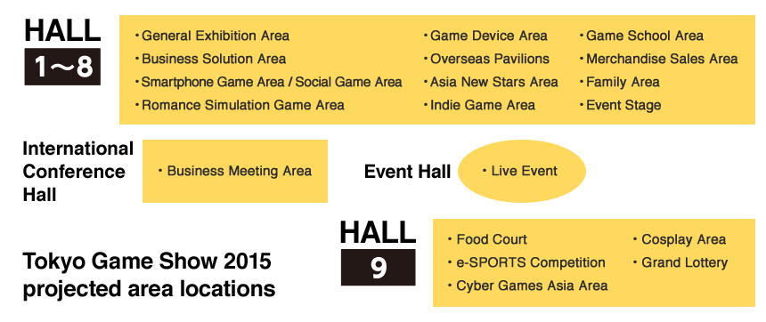

- Business Day
- 2015.9.17[Thu]-18[Fri]
- Public Day
- 2015.9.19[Sat]-20[Sun]
- Venue
- Makuhari Messe(Mihama-ku,Chiba,Jpan)


TOP For Exhibitor Overview
Overview
- Name:
- TOKYO GAME SHOW 2015
- Period:
- BUSINESS DAYSeptember 17 (Thursday) - September 18 (Friday) From 10:00 a.m. to 5 p.m.
［* Admission is limited to the press, and industrial trade visitors.］ PUBLIC DAYSeptember 19 (Saturday) - September 20 (Sunday) From 10:00 a.m. to 5 p.m.
［* The doors may open at 9:30AM depending on the circumstances.］ - Venue:
- Makuhari Messe Hall 1-9, Event Hall, International Conference Halls
- Organizer:
- Computer Entertainment Supplier's Association (CESA)
- Co-Organizer:
- Nikkei Business Publications, Inc. (Nikkei BP)
- Supporter:
- Ministry of Economy, Trade and Industry (METI) (Planned)
- Expected # of Visitors:
- 220,000
- Expected # of Booths:
- 1,600 Booths
- Admission Fees:
- JPY 1,200(including tax)(Tickets sold in advance: JPY 1,000/including tax)/Child(under 12 years old):Free
Tokyo Game Show is the global trade show where a large number of key people in the game market gather from every corner of the world. We had 202 exhibitors from 31 countries and regions. 1,293 press people from 33 countries and regions covered the event. Tokyo Game Show has attracted international attention as the world largest scale GAME event.
On top of it Tokyo Game Show has been recognized as the international business meeting opportunity on Business Day with 12.8 % increase of 1,555 oversea visitors for two days.
- Tokyo Game Show as the largest Asian game tradeshow will further enhance business function. With online appointment service starting from August, visitors can organize meeting schedule in advance.
- TGS increases PR effectiveness for exhibitors to be more attractive venue to communicate to worldwide audience.
Media partners out of seven Asian countries will intensively publish coverage of the show on top of increasing number of press people all around the world.
Official movie channel will be in service both by Japanese and English. - 
To welcome increasing number of visitors in better condition, Makuhari Messe Hall1-9,
International Conference Hall, Event hall will be opened for the show.
The following image shows the locations of each featured area.
*Final venue size and locations will be decided on the exhibitor briefing on July.
